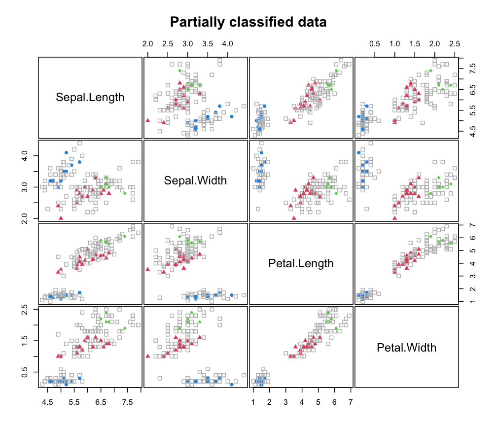

predict.MclustSSC.RdClassify multivariate observations based on Gaussian finite mixture models estimated by MclustSSC.
# S3 method for MclustSSC
predict(object, newdata, ...)Returns a list of with the following components:
a factor of predicted class labels for newdata.
a matrix whose [i,k]th entry is the probability that
observation i in newdata belongs to the kth class.
# \donttest{
X <- iris[,1:4]
class <- iris$Species
# randomly remove class labels
set.seed(123)
class[sample(1:length(class), size = 120)] <- NA
table(class, useNA = "ifany")
#> class
#> setosa versicolor virginica <NA>
#> 10 15 5 120
clPairs(X, ifelse(is.na(class), 0, class),
symbols = c(0, 16, 17, 18), colors = c("grey", 4, 2, 3),
main = "Partially classified data")

# Fit semi-supervised classification model
mod_SSC <- MclustSSC(X, class)
pred_SSC <- predict(mod_SSC)
table(Predicted = pred_SSC$classification, Actual = class, useNA = "ifany")
#> Actual
#> Predicted setosa versicolor virginica <NA>
#> setosa 10 0 0 40
#> versicolor 0 15 0 45
#> virginica 0 0 5 35
X_new = data.frame(Sepal.Length = c(5, 8),
Sepal.Width = c(3.1, 4),
Petal.Length = c(2, 5),
Petal.Width = c(0.5, 2))
predict(mod_SSC, newdata = X_new)
#> $classification
#> [1] setosa versicolor
#> Levels: setosa versicolor virginica
#>
#> $z
#> setosa versicolor virginica
#> [1,] 9.999995e-01 4.732013e-07 2.971005e-24
#> [2,] 1.919741e-120 9.996956e-01 3.044061e-04
#>
# }